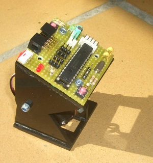
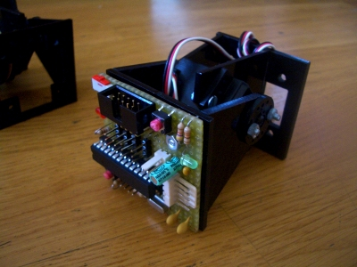

Hoy hemos probado el primer prototipo de la tarjeta Skycube, que se atornilla a los módulos Y1 para construir robots modulares autónomos.
Esta placa es hardware libre, y está siendo diseñada con Kicad, por lo que es “Hardware libre de pata negra“. Este primer prototipo es una prueba de concepto y los componentes están soldados en una placa de fibra de vidrio con los cables tirados a mano. El esquema está disponible en el repositorio. El PCB se hará en las siguientes semanas.
En este vídeo podéis ver una demostración de un módulo y1 oscilando con la Skycube integrada:

El software con el que se está probando la placa es el de los micro-osciladores.
Las características de la placa son:
* Microprocesador: PIC16F876A a 20Mhz
* Control de hasta 8 módulos Y1.
* 4 conectores de servos por cada cara, para facilitar el cableado
* Comunicación por bus I2C entre tarjetas Skycube.
* Conector de I2C doble, uno por cada cara, para facilitar la interconexión
* Conector de alimentación doble, tipo molex, uno por cada cara
* Led de pruebas
* Botón de pruebas
* Micro-interruptor de on/off
* Led de power-on
* Slot de expansión para conectar sensores

Los robots modulares autónomos están cada vez más cerca 😉
Hi Obijuan,
I am planing to use this skycube card in my project. There is one thing that I am not sure hope you can help me. Is the hex.file were directly burned into the PIC chip on the skycube card through the USB cable by using the bootloader? Meaning do I require a PIC programming kit to download the hex.file into the chip?
P/s:need your help urgently.
Thanks
Hi Clarence!
I have seen to you a private email. You only need a PIC programming kit for burning the bootloader the first time. After that, it is not needed any more. Just using an FTDI RS-232 cable you can download the .hex files into the skycube.